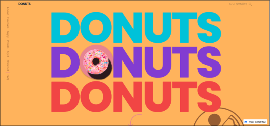

STYLE GUIDE
Inspirational websites
I have discussed other inspirational websites in my blog posts. These have mostly inspired me in terms of the look and feel that I want to invoke in my website.
April Ford

I really like the April Ford website because it uses a limited colour palette, it has incredible structure, and it is easy to use. It consists of 5 colours; black, white, blue, purple, and grey and each colour has a purpose. Important words are styled in blue, text is written in black, the background is white, the banners are purple and images are grey. This shows users that there each colour is significant in different ways. The website has a balanced layout which is very pleasing to the eye and the font they used is readable and legible.
Donuts
I also like the Donuts website because of its use of colour and layout. They used a wide range of pastel and solid colours and they compliment each other very well. The website is structured as one continuous page but with each scroll a new element is introduced. I found this interesting because, in theory this would be overwhelming but I found it oddly satisfying. The layout is mixture of balanced, asymmmetrical, and radial. The font is also readable and legible.
My goal and aesthetic
I want my website to look bright but not in a glaring way hence I will be using pastel colours. The background, navigation tabs, and next button colours will be consistent on every page. I also want it to feel friendly but also professional therfore my buttons will be a mixture between straight and rounded edges. This realtes to my content because it is both professional and also playful and creative. The blog, design page, and essays will be assessed for the course but the profile and portfolio are my way of showing who I am and the projects I have done, which will be "assessed" by a potential employer.
Colour Palette & Font Style

This is my chosen colour palatte. I got this image from the internet and I specifically chose the version with the hex codes on it so that when I start adding styling to my website, it will be easy to get the colours to be exact. I chose these colours because they look good next to each other and after seeing the Donuts website I am confident that I want my website to be pastel as well.

This is my chosen font style, Futura. I also got this image from the internet and I like that it presents how the font looks when typing different numbers, letters, and symbols. This font is legible and readable as it was part of a list of legible websites when I searched for it.
Drafts for the UI Overview

Final Design Sketches


This is colour palette that I want to use for the final design of my website. I also want to incoporate some of the colours from the previous one such as the cream colour, the light orange, and the red.